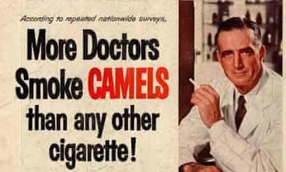

SARS-CoV-2 and the COVID-19 Pandemic
Identification
On December 31, 2019, the World Health Organization (WHO) office in China had been alerted of several cases regarding a novel viral pneumonia in Wuhan, Hubei province (Carvalho et al., 2021). Shortly after, on January 10, 2020, an early first draft genome of the novel virus, later termed severe acute respiratory syndrome coronavirus 2 (SARS-CoV-2) had been made available; SARS-CoV-2 would be the third betacoronavirus outbreak in humans within the past century, with others including the 2002-2003 SARS-CoV outbreak and the 2012 Middle East respiratory syndrome (MERS-CoV) outbreak (Carvalho et al., 2021).

Figure 1. Location of Wuhan, Hubei Province, China. Referred to by URL.
Symptoms
On January 24, the coronavirus had been identified and characterized in a study involving patient samples (Carvalho et al., 2021). The study had listed common symptoms at onset of disease, including cough, fatigue, fever, and myalgia. Additionally, other symptoms were reported throughout the year, including neurological symptoms such as loss of tase and smell, vascular complications in severe cases of disease, and associated multisystem inflammatory disease in children (Carvalho et al., 2021). Moreover, early evidence describing transmission of the virus from person-to-person had been reported in January, subsequently causing the novel coronavirus outbreak to be declared as a Public Health Emergency of International Concern by the WHO on January 30 (Carvalho et al., 2021).
Declaration as a Pandemic
The disease caused by SARS-CoV-2 infection had been termed COVID-19 by the WHO on February 11, 2020 and was established with three key features distinguishing it from the previous coronavirus outbreaks (Carvalho et al., 2021). Alongside effective person-to-person transmission, the features had included potential transmission prior to (if ever) showing symptoms, and a longer incubation period than both SARS-CoV and MERS-CoV (Carvalho et al., 2021). Furthermore, the prevalence of COVID-19 had set it far apart from its predecessors, so much so that by late February there had been 83 652 registered cases of COVID-19 globally – approximately 10 times that of the entire 2002-2003 SARS-CoV outbreak (Carvalho et al., 2021). Ultimately, on March 11, 2020, the WHO had declared COVID-19 a pandemic (Carvalho et al., 2021).
Vaccine Development
In response to the COVID-19 pandemic, the development of COVID-19 vaccines had quickly begun, with the National Institutes of Health and Moderna starting phase I clinical trials of an mRNA vaccine targeting a spike protein, mRNA-1273, on March 16, 2020 (Carvalho et al., 2021). Two months later, in May 2020, the phase I clinical trial data for Moderna’s mRNA-1273 vaccine had been reported, alongside Pfizer and BioNTech starting phase I/II clinical trials of their own mRNA vaccine, BNT162 (Carvalho et al., 2021). By November, both Pfizer/BioNTech and Moderna had announced the efficacy of their vaccines, being greater than 90% and 94% respectively; Ultimately, by December 2020 to January 2021, the use of Pfizer/BioNTech and Moderna vaccines became authorized in the USA, UK, Europe, and more (Carvalho et al., 2021).
Science Communication in Health and Disease
Misinformation in the COVID-19 Pandemic
Accompanying the COVID-19 pandemic had come a large wave of information has been made available online through news and social media. The overabundance of information associated with the pandemic, which some term an ‘infodemic’, has also included misinformation, causing difficulty for the public to find reliable, factual sources of information (Garneau & Zossou, 2021). As the pandemic had arisen during the modern social media era, the harm associated with the COVID-19 pandemic has become compounded with the rapid communication and spread of misinformation (Love et al., 2020). This is especially concerning as approximately 90% of Canadians had been exposed to COVID-19 misinformation online, with 53% reporting to sharing information without knowing its accuracy, and only 21% reporting to having always checked the accuracy of such information (Garneau & Zossou, 2021).
Furthermore, the abundance of misinformation within the COVID-19 pandemic has not only altered public perception of the pandemic but has caused fatalities and significant impacts to morbidity and mortality across the globe. For example, a misinformed rumor in Iran involving alcohol killing the coronavirus has led to a surge in consumption of counterfeit alcohol containing methanol (Love et al., 2020). As a result, the healthcare system in Iran had faced further challenges in methanol poisoning cases alongside the COVID-19 pandemic, with over 300 deaths, over 1000 requiring hospitalization, and many expecting permanent vision loss (Love et al., 2020). Similar promotion to the use of hydroxychloroquine and chloroquine as a cure against COVID-19, despite its potential therapeutic benefits in patients being merely speculative, has been impacted from widespread extrapolation and misinformation (Love et al., 2020). While both have demonstrated in vitro activity against coronavirus, oversight of its narrow therapeutic index and dangerous adverse effects, coupled with broad extrapolation of its speculative benefits, has caused cases of critical illness and poisoning fatalities associated with their use against COVID-19 (Love et al., 2020).
Context in Communicating Misinformation
Misinformation within the COVID-19 pandemic is far from the first case in which medical misinformation, and inappropriate standards of scientific communication, has caused a damaging impact to the health of the public. For decades, the tobacco industry has historically acted in deliberate deception of the public regarding the harms and negative impacts of smoking on health (Tan & Bigman, 2020). The use of deceptive marketing tactics and misinformation by major tobacco companies aimed to deny concerns regarding the addictive and harmful nature of cigarettes (Tan & Bigman, 2020); for example, in 1994, U.S. companies testified before Congress stating the science linking cigarette smoking to disease was inconclusive, denying health and addiction concerns alongside marketing towards children (Smith et al., 2011). However, internal documents later revealed the deceptive nature of the previous claims, ultimately ruling these companies guilty of conspiring to deny, distort, and minimize the hazards of cigarette smoking to the public (Smith et al., 2011).
Figure 2. Example of cigarette misinformation. Referred to locally.
Moreover, in the contextual history of pandemics and disease outbreak, COVID-19 is not the only pandemic to which misinformation has played a severe impact. For example, the 2003 SARS-CoV outbreak, presented great challenges in the containment and response to the (at the time) novel disease, with thousands experiencing disruption to their daily routines to prevent further disease transmission (Tam, 2018). As such, the SARS outbreak acted as a needed warning to strengthen and improve the infection control and prevention response in health care settings, notably including increasing public recognition of health threats from infectious disease (Tam, 2018).
Modern Innovations in Scientific Communication
Alongside developments in public health emergency preparedness and response across previous disease outbreaks, the methods utilized in communicating science in medicine and health has also evolved with modern technology. For example, the use of visual materials, including drawings and illustrations, has demonstrated and been used to aid patients in making informed choices in healthcare (Kearns et al., 2020). Furthermore, the extreme presence of social media has been utilized to benefit the communication of science, aiding in the dissemination, knowledge transfer, and engagement in health sciences within the public (Alamri et al., 2019). Conversely, the presence and utilization of social media has played a key role in the mass abundance of information and distribution of misinformation, leading toward the current infodemic (Love et al., 2020).
Ultimately, akin to previous pandemics and disease outbreaks, the mortality and morbidity associated with the COVID-19 pandemic is burdened with public fear and deception attributed to misinformation. Unique to the COVID-19 pandemic, however, are the novel advancements in technology aiding the propagation of information, both false and factual, through platforms such as social media. Therefore, in combating misinformation and aiding navigation throughout the current COVID-19 ‘infodemic’, investigation of the following question becomes vital: how has multimedia and modern science communication impacted the COVID-19 pandemic?
References
- Alamri, A., Rogers, P., Kearns, C., Doke, T., Al-Habib, A., Servadei, F., Hutchinson, P. J., Kolias, A. G., & Uff, C. (2019). Social media for dissemination and public engagement in neurosurgery—The example of Brainbook. Acta Neurochirurgica, 161(1), 5–9. https://doi.org/10.1007/s00701-018-3757-8
- Carvalho, T., Krammer, F., & Iwasaki, A. (2021). The first 12 months of COVID-19: A timeline of immunological insights. Nature Reviews Immunology, 21(4), 245–256. https://doi.org/10.1038/s41577-021-00522-1
- Garneau, K., & Zossou, C. (2021). Misinformation During the COVID-19 pandemic. Statistics Canada. https://www150.statcan.gc.ca/n1/pub/45-28-0001/2021001/article/00003-eng.htm
- Kearns, C., Kearns, N., & Paisley, A. M. (2020). The art of consent: Visual materials help adult patients make informed choices about surgical care. Journal of Visual Communication in Medicine, 43(2), 76–83. https://doi.org/10.1080/17453054.2019.1671168
- Love, J. S., Blumenberg, A., & Horowitz, Z. (2020). The Parallel Pandemic: Medical Misinformation and COVID-19. Journal of General Internal Medicine, 35(8), 2435–2436. https://doi.org/10.1007/s11606-020-05897-w
- Smith, P., Bansal-Travers, M., O’Connor, R., Brown, A., Banthin, C., Guardino-Colket, S., & Cummings, K. M. (2011). Correcting Over 50 Years of Tobacco Industry Misinformation. American Journal of Preventive Medicine, 40(6), 690–698. https://doi.org/10.1016/j.amepre.2011.01.020
- Tam, T. (2018). Fifteen years post-SARS: Key milestones in Canada’s public health emergency response. Canada Communicable Disease Report, 44(5), 98–101. https://doi.org/10.14745/ccdr.v44i05a01
- Tan, A. S. L., & Bigman, C. A. (2020). Misinformation About Commercial Tobacco Products on Social Media—Implications and Research Opportunities for Reducing Tobacco-Related Health Disparities. American Journal of Public Health, 110(S3), S281–S283. https://doi.org/10.2105/AJPH.2020.305910